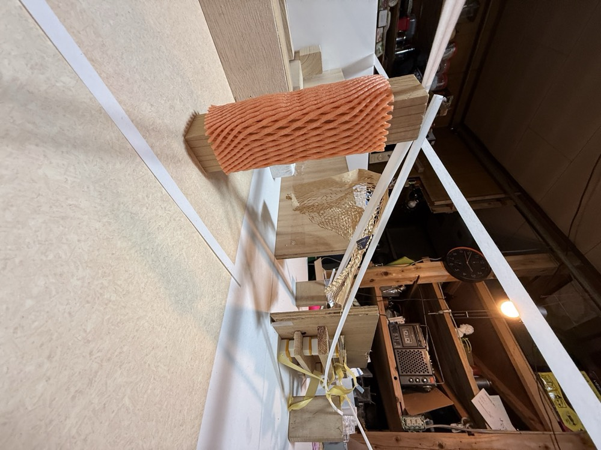
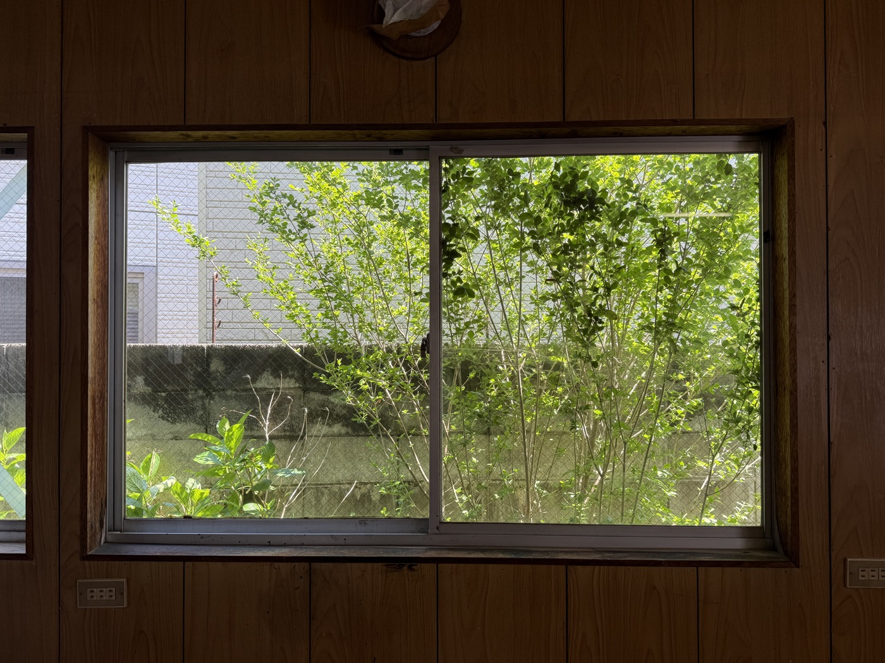
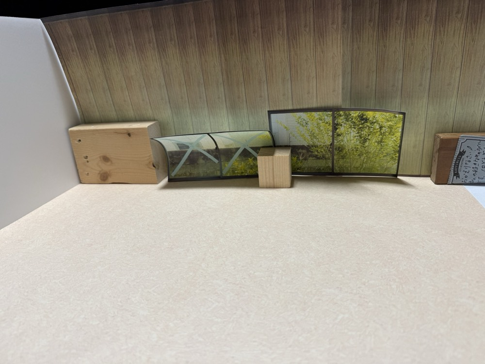

建築家の小坂さんのご提案で、10分の1のサイズの建築模型を作り、その建築模型を遊ぶことを通して旭スタジオの使い方を探索する、というのをやってみることになった。
具体的には、旭スタジオにあらかじめあるさまざまなもの、例えば端材とか端材とかゴミとか（と、参加者が持ち寄った細々したもの）を順番に建築模型に勝手に投げ込んで、どんなふうになるかをみる。そうして、模型の中で成り立つ空間のあり方が、実際の空間にどんなふうに干渉するのかをみる。
順番に一人一つずつアイテムを置くのを５周くらい回して、何ができあがるかを見る。部屋の真ん中で羊を飼ったり、ドームができたり、推定15mくらいの柱が倒れたりする。
＊＊＊
ふつう建築模型には、二つの目的、というか方向性があるそうだ。現実の建物を基準として、抽象化する方向と具体化する方向。つまり細部は再現せずコンセプトの検証といった意味合いで模型を作り、建築が担う体験を抽象的な形で伝える、といった方向と、なるべく細部まで現実に近い形で作り込んで、実際の利用シーンにおいてどのようであるかを検証するといった方向があるそうだ。
おそらく今回のワークショップはそのどちらでもない。
模型の中に置かれるものは、色や形の情報が剥ぎ取られたわけではないし、また、その空間に実際にあるものを再現したわけでもない。むしろその空間にとっては異物であり、よくわからない文脈を呼び寄せる。
＊＊＊
たとえば、
①スチレンボードの細長い端材が、玄関から手前や奥の部屋の角まで真っ直ぐに立てかけられる。天井近くの高さで縦横に部屋を貫くそれをみて、天井近くにパイプのようなものがある状態を想像する。
②今度は実際の物件について話しながら。もともと壁上部に開いてあった煙突用の穴（おそらくFFヒーターの排気用）に鳥が巣を作っているのを見て、その穴にアクリルか何かで透明のダクトを差して室内に伸ばし、中に鳥が入ってくるのを室内から眺めて楽しめないか、という話になる。
③その穴の入り口付近には窓があって、窓辺に植木が伸びている。鳥ではなく植木の枝が侵入してくるようなイメージがしてきて、むしろダクトではなくて、枝をそのまま室内に伸ばしてはどうか、という話になる。室外の枝を全部剪定して、室内の枝だけを成長させるのはどうか。
④今度は模型に戻って。スチレンボードの端材で張り巡らされた件の構造物が、さっきの植木＝植物のイメージと重なって、なんとなく果樹園に見えてくる。厳密には、構造物を支える中央の柱に、果物用のネットが取り付けられたのが、害獣を木に登らせないための装置に見えたのもあるが。
＊＊＊
このように、模型と実際のどちらもを行ったり来たりしながら想像が膨らむ。
基準はどこにもない、という感覚。現実の空間と照らして、この遊ばれた模型を評価できないし、また逆に、模型の方から現実の空間になにか決定的な知見を返したりできるわけでもない。
しかし、着実に、この空間が持っている来歴や文脈が起こされていく。その来歴・文脈は、以前ここが印刷工場だったり、葬具屋だったり、藤さんがいたりしたこととは関係なく、FFヒーターの排気口とか、窓辺に植木がある、とかそういうどうでもいい（どうにでもなる）来歴・文脈のことを指す。
模型は、これから作られるものの設計図になったり（拡張）、あるいは、すでにあるもののコピーになったり（縮減）するのではなくて、あるもので空間を置き換え、また、模型の話と実際の話を入れ替えながら、色々な文脈を呼び寄せる（置換）といった働きを持っている気がする。


